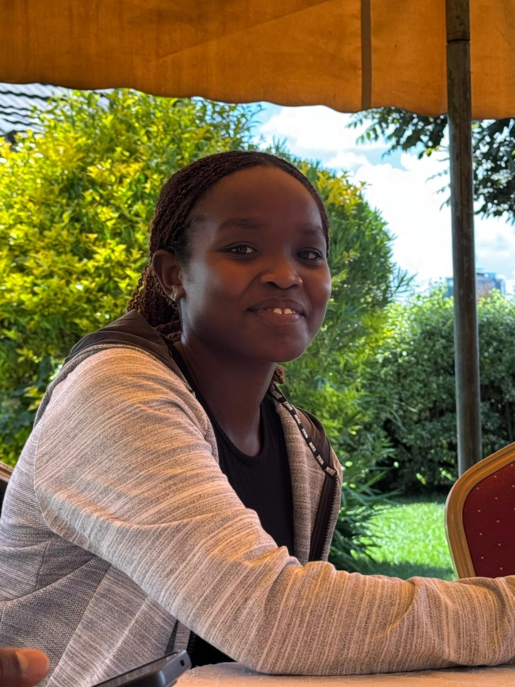

Laura Sang
Kenya Chapter Finance Director
Laura Sang is a medical student in Uzima University. Laura served as a Local Officer for the Standing Committee on Mental Health, where she helped coordinate initiatives aimed at reducing stigma, educating peers, and promoting emotional well-being among students and the wider community. Her dedication to outreach has also led her to participate in several medical camps, offering healthcare services in underserved areas and gaining hands-on experience in patient care. Laura is passionate about bridging the gap between medical support and holistic healing.